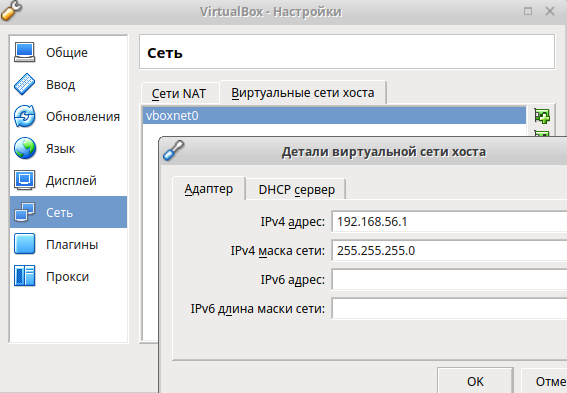
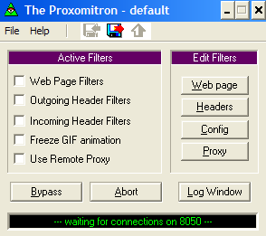
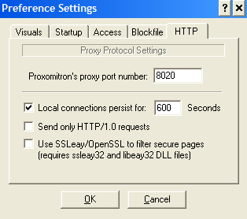

| Ник | Пост | Дата |
|---|---|---|
| ValdikSS | These are very useful utilities — they convert TUN/TAP to Socks or HTTP Proxy, allowing to use VPN as a proxy (OpenVPN as Socks5), does not require root privileges. tunsocks is a user-level SOCKS, HTTP, and port forwarding proxy for use with VPNs that typically interact with tun devices. Rather than passing bytes to and from the tun device, they can pass the data to and from this user-level program. tunsocks is implemented using lwIP. Additionally, tunsocks provides connection sharing via NAT. ocproxy is a user-level SOCKS and port forwarding proxy for OpenConnect based on lwIP. When using ocproxy, OpenConnect only handles network activity that the user specifically asks to proxy, so the VPN interface no longer “hijacks” all network traffic on the host. | 2019-09-22T22:52:17.713Z |
| amwashere(amwashere) | @ValdikSS Thanks for suggestions. But due to a lack of documentation for tunsocks isn’t obvious how setup forwarding traffic from created socks5 to specific tun interface. Could you provide some examples of using tunsocks? What I want to achieve is like this: User (socks5 client) – [vps with socks5 server + several tun interfaces (openvpn clients connected to different vpn servers)] – several outputs to the internet via different vpn servers E.g. | 2022-04-13T22:49:53.167Z |
| ValdikSS |
Sorry, I haven’t tried it personally. | 2022-04-22T18:24:37.812Z |
| ValdikSS | For OpenVPN, there’s a patch for ocproxy support, but it’s outdated (for 2.3.x branch). I’ve ported it to the recent 2.5, but this is PoC (Windows not supported, yet). FYI, there’s similar projects for WireGuard: wghttp, wg-http-proxy, wireproxy, onetun | 2022-07-16T15:05:26.864Z |
| ValdikSS | If you already have tun interfaces (regular VPN) and you want to setup proxy on a server, you just need to bind outgoing requests of the proxy to specific tun interface, and also make sure that there’s default route over that interface with higher metric than the regular route. ocproxy/tunsocks, on the other hand, allows you to “emulate” tun interface and “convert” it into proxy. There won’t be a real tun interface in the OS in this case. | 2022-07-16T15:13:24.787Z |
| anon94384997 | Собрать tunsocks очень сложно. Я предлагаю менее элегантное, но более доступное решение на базе виртуалки. Достоинством является кроссплатформенность и то, что можно будет преобразовать в прокси любой VPN. В главном окне VirtualBox: Файл - Настройки - Сеть - Виртуальные сети хоста - значок + (добавляете новую сеть) vboxnet0. Настройки vboxnet0 такие:  Устанавливаете Windows в виртуалку. В реальной системе (в хосте) должен появиться адаптер vboxnet0. Если нет (например, в Linux), в Network Manager’е выберите “Добавить подключение - Ethernet”. Запустите виртуальную Windows, установите гостевые дополнения. 2-ый адаптер (можно переименовать в Internal): Свойства - оставить только галочку на “Протокол Интернета (TCP/IP)” - Свойства: Итак, мы создали виртуальную внутреннюю сеть между хостом (192.168.56.1) и виртуалкой (192.168.56.2). (Адаптер 2) Поднимаете в виртуальной Windows любой VPN.  Config - Don’t use textures (отключает цветную тему, требуется перезапуск)  Теперь в реальной системе (в хосте) в браузерах вы можете указать HTTP и HTTPS прокси Чтобы не было утечек (коннектов мимо прокси) браузеры нужно дополнительно настроить. Но, во всей этой системе нет Kill switch. Если виртуальный VPN отключится (во время реконнекта tun шлюз разорвется), то Proxomitron будет транслировать в прокси интернет, который виртуалка получает по NAT. Необязательно: Теперь в виртуальном VPN мы должны указать этот вышестоящий HTTP прокси: 192.168.56.1:8060 Если у виртуального VPN будут проблемы и он разорвет шлюз, то в виртуалке интернета не будет (кроме вышестоящего прокси, но о нем знает только VPN клиент и будет через него реконнектится). А Proxomitron, который раздает нам VPN интернет в реальную систему, останется без интернета и будет ждать реконнекта VPN. Тем самый предотвращается утечка в случае сбоев. Вообще, такой способ позволяет проводить хитрые манипуляции. Можно, например, пустить OpenVPN через любой прокси (если в polipo указать еще более вышестоящий). Но все прокси ограничены TCP. У меня появилась возможность использовать SoftEther VPNGate в Linux, хотя SoftEther VPNGate не поддерживает Linux. | 2022-12-02T11:06:10.389Z |
| anon94384997 | По поводу tunsocks поясните, пожалуйста. Я правильно понимаю, сначала я должен скомпилировать tunsocks https://github.com/russdill/tunsocks потом openvpn-tunpipe https://github.com/ValdikSS/openvpn-tunpipe потому что в оригинальном openvpn клиенте нет поддержки tunpipe/tunsocks? Или есть? Если нет, ValdikSS, как ты умудрился добавить поддержку tunpipe в openvpn (2.5) и следить за актуальностью openvpn в своем репозитории? Где эти патчи? Сейчас в твоем репозитории последний коммит от 16 июля 2022 года, что примерно соответствует 2.5.7. А если я соберу коммит от 2 мая 2021 (2.5.2) там будет поддержка tunpipe? А запускать потом все это дело надо будет как-то так? В общем, я полагаю openvpn (с поддержкой tunpipe) будет передавать управление tun’ом скрипту tunsocks (команды --script-tun --script) | 2022-12-03T04:28:33.026Z |
| anon94384997 | Я скомпилировал tunsocks и openvpn-tunpipe. И как теперь их подружить? | 2022-12-03T08:37:09.579Z |
| anonymous75(anonymous75) | Для оригинально патча работало так: sudo не нужен, адрес слушающего прокси лучше указать явно (127.0.0.1 или другой), localhost через hosts файл может оказаться не тем, что нужно, не забыть про днс. | 2022-12-03T09:11:51.338Z |
| anon94384997 |
Ошибка после openvpn соединения: Но у меня старая система и tunsocks новее Mar 1, 2017 не собирается. А openvpn я пробовал 3 версии и со всеми та же ошибка. https://github.com/ValdikSS/openvpn-tunpipe/commit/c2912912047fdd228faedb6466672288e14dbba6 https://github.com/OpenVPN/openvpn/releases/tag/v2.3.18 Параметры сборки openvpn (последней версии от valdikss) такие, в общем всё включено, кроме systemd и selinux:
Как пропатчить 2.3.18 хотя бы? | 2022-12-03T12:09:46.015Z |
| anonymous75(anonymous75) |
В конфиге для протона нет опции Но этой ошибки в патченной версии быть не должно | 2022-12-03T12:27:32.336Z |
| anon94384997 | Ничего не помогает (и я пробовал не только Proton). Я даже скомпилировал 2.3.3 с форумными патчами. Чего мне стоило вытащить эти патчи из текста, не буду говорить. tunsocks заменил на ocproxy (он 2014 года) и все равно ошибки. | 2022-12-03T13:54:19.712Z |
| anonymous75(anonymous75) | Интересно, но должно работать. | 2022-12-03T14:16:13.021Z |
| anon94384997 | Заработало. Пересобрал openvpn. На этот раз решил не городить опций в configure (т.е. положился на дефолты) и еще посмотрел как openvpn собирается в Arch и Ubuntu. Сравнил (openvpn --version) системный openvpn и собранный рабочий. Оказалось, что в системном enable-iproute2=yes, а в моем собранном от valdikss enable-iproute2=no. Причем, ни системные (ubuntu ppa, ubuntu repo, arch), ни я не указывали enable-iproute2 в configure. Значит в исходниках оригинального openvpn iproute2 по умолчанию включен, а в исходниках от valdikss по умолчанию отключен. Я же раньше явно включал iproute2. Привожу инструкции как я всё собирал. Версия tunsocks от 1 марта 2017 года Эти параметры взяты из Ubuntu и Arch. Я думаю, самое главное --disable-iproute2 но это по умолчанию в исходниках от valdikss, поэтому я не указывал явно. Вот куда срет openvpn установка: можно удалить: Запуск: | 2022-12-04T14:10:05.076Z |
| anon94384997 | И хотя это вряд ли кому-нибудь будет нужно, вот готовые пакеты для Ubuntu 16.04 i386. Извините, зависимости в deb пакеты не прописывал. Проверить их можно readelf -d или ldd. | 2022-12-04T14:41:29.160Z |
| anon94384997 |
А если в Msys (ex Cygwin) собрать? Он вроде эмулирует POSIX. Правда, не будет поддержки XP и библиотеку msys-2.0.dll придется тащить с собой. tunsocks, кстати тоже не хочет кросскомпилиться в mingw. | 2022-12-05T13:31:17.442Z |
| xAffan(xAffan) | Hello Mr.Anon. Does this setup work on Windows? If you use the old patch of openvpn then use tunsocks. Is it possible? I really need to know. Thanks!!! | 2024-07-08T14:20:04.777Z |
| 0ka(0ka) | just use regular openvpn with high metric on interface and sing-box or xray with binding to interface? | 2024-07-08T14:22:39.876Z |
| xAffan(xAffan) | I don’t understand what you said. I want to run a proxy without root access. Using normal openvpn would negate that. And compiled versions for these programs is not available so it is already a pain. | 2024-07-08T15:03:21.804Z |
| 0ka(0ka) |
if you only have openvpn then you can connect to it from android and then use something like https://play.google.com/store/apps/details?id=cn.adonet.proxyevery to expose it as a proxy | 2024-07-08T15:13:52.531Z |
| xAffan(xAffan) | Luckily, I had wireguard so it worked out but openvpn is more convenient. | 2024-07-08T15:59:10.402Z |
| ValdikSS | This exact patch won’t work on Windows, but in general it is possible to adapt it for Windows. I’m planning to do that in my free time. | 2024-07-08T16:18:26.251Z |
{kind=link}
{kind=link}
{kind=link}
{kind=link}